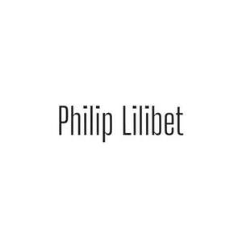

Trade Mark Journal No.2025/042 17 October 2025
UK00004274553 7 October 2025 (3,25)

- Class 3
- Perfumery and fragrances; Fragrances; Liquid perfumes; Perfumery; Perfume; Perfumes; Perfume oils; Amber [perfume]; Oils for perfumes and scents; Fragrance sachets; Musk [perfumery]; Cologne; Perfume water; Aromatics for perfumes; Room perfume sprays; Potpourris [fragrances]; Colognes; Scents; Fragrance emitting wicks for room fragrance; Aromatics for fragrances; Perfumes for cardboard; Fragrance refills for non-electric room fragrance dispensers; Cedarwood perfumery; Extracts of perfumes; Eau de cologne [cologne water]; Extracts of flowers [perfumes]; Flowers (Extracts of -) [perfumes]; Extracts of flowers being perfumes; Body deodorants [perfumery]; Perfumes for ceramics; Ionone [perfumery]; Deodorants for personal use [perfumery]; Aftershave lotions; Perfumeries; Body fragrances; Fragrance preparations; Perfume oils for the manufacture of cosmetic preparations; Perfumed potpourris; Vanilla perfumery; Household fragrances; Fragrances for automobiles; Perfumed sachets; Room perfumes in spray form; Fragrance sachets for eye pillows; Natural oils for perfumes; Perfumery products; Aftershave; Room fragrances; Feminine deodorant sprays; Perfumed soaps; Mint for perfumery; Cologne water; Solid perfumes; After-shave lotions; Scented water for fragrancing; Air fragrance preparations; Perfuming sachets; Perfumed soap; Peppermint oil [perfumery]; Aftershave balms; Scented oils; Scented linen sprays; Synthetic perfumery; Scented sachets; Aftershave balm; Air fragrance reed diffusers; Perfumed powders [for cosmetic use]; Aftershaves; Geraniol for fragrancing; Scented body lotions; Synthetic vanillin [perfumery]; Perfumed powder [for cosmetic use]; Scented soaps; Incense spray; Perfumed powders; Perfumed creams; Scented body spray; Eau de Cologne; Eau de cologne; Suntan lotion [cosmetics]; Essential oils as perfume for laundry purposes; Sachets for perfuming linen; Linen (Sachets for perfuming -); Perfumed powder; Essences for fragrancing; Eau de colognes; Ethereal oils for fragrancing; Scented room sprays; Fumigation preparations [perfumes]; After-sun oils [cosmetics]; Perfumed lotions [toilet preparations]; Suntan oils [cosmetics]; After-shave; Fragrance for household purposes; Aromatherapy lotions; After-shave balms; Eaux de Cologne; Eaux de cologne; Aftershave creams; Scented body lotions and creams; Scented fabric refresher sprays; Skin fresheners [cosmetics]; Tanning oils [cosmetics]; Perfumed body lotions [toilet preparations]; Deodorant soap; Soap (Deodorant -); Fragrant sachets; Incense sachets; Aftershave milk; Agarwood [incense]; Geraniol fragrancing compounds; Roll-on deodorants [toiletries]; Natural perfumery; Cosmetics; Perfumed water; Eau de parfum.
- Class 25
- Clothing; Ready-to-wear clothing; Knitwear [clothing]; Casual clothing; Denims [clothing]; Woolen clothing; Jackets [clothing]; Clothing for sports; Sports clothing; Parts of clothing, footwear and headgear; Leather clothing; Jackets being sports clothing; Linen clothing; Clothing for cycling; Men's clothing; Jackets (Stuff -) [clothing]; Stuff jackets [clothing]; Clothing for gymnastics; Bottoms [clothing]; Ready-made clothing; Woven clothing; Trunks being clothing; Embroidered clothing; Clothes for sports; Shirts; Short-sleeved shirts; Long-sleeved shirts; Open-necked shirts; Yokes (Shirt -); Collared shirts; Short-sleeved T-shirts; Polo shirts; Corduroy shirts; Shirt fronts; Knit shirts; Sweat shirts; Shirts for suits; Casual shirts; Shirts and slips; Rugby shirts; Football shirts; Hooded sweat shirts; Woven shirts; Dress pants; Soccer shirts; T-shirts; Night shirts; Bib shorts; Trousers shorts; Sport shirts; Sleep shirts; Tennis shirts; Fishing shirts; Jeans; Yoga shirts; Shorts [clothing]; Denim pants; Under shirts; Button down shirts; Leggings [trousers]; Hunting shirts; Pants; Tee-shirts; Sports shirts with short sleeves; Boy shorts [underwear]; Blue jeans; Sports shirts; Trousers; Moisture-wicking sports shirts; V-neck sweaters; Printed t-shirts; Denim jeans; Corduroy pants; Camouflage pants; Sleeveless jackets; Men's dress socks; Jerseys [clothing]; Babies' pants [clothing]; Babies' pants [underwear]; Corduroy trousers; Chino pants; Fleece shorts; Shorts; Sweat pants; Sweatpants; Sleeved jackets; Turtleneck sweaters; Bib overalls for hunting; Polo sweaters; Maternity pants; Bib tights; Golf trousers; Casual trousers; Capri pants; Trousers for sweating; Sweat shorts; Wristbands [clothing]; Sleeveless pullovers; Slacks; Pirate pants; Warm-up pants; Undershirts; Padded shirts for athletic use; Snowboard trousers; Khakis; Skirt suits; Leather pants; Baby pants; Turtleneck pullovers; Rugby shorts; Vest tops; Polo knit tops; Moisture-wicking sports pants; Denim jackets; Overalls; Collars [clothing]; Tracksuit bottoms; Jogging pants; Underwear; Cycling pants; Mock turtleneck sweaters; Turtleneck tops; Sweatshirts; Nurse pants; Golf shorts; Short overcoat for kimono (haori); Clothes; Trousers of leather; Knitted underwear; Tracksuit tops; Baselayer bottoms; Fleece tops; Hooded tops; Pajama bottoms; Baselayer tops; Coats (Top -); Top coats; Warm up suits; Top hats; Down jackets; Track pants; Short sets [clothing]; Korean outer jackets worn over basic garment [Magoja]; Knit tops; Jacket liners; Jogging sets [clothing]; Tube tops; Hooded sweatshirts; Padded pants for athletic use; Bibs, sleeved, not of paper; Weatherproof pants; Down vests; Warm-up tops; Knitted tops; Chemise tops; Jogging bottoms [clothing]; Track jackets; Fleece jackets; Three piece suits [clothing]; Collar liners for protecting clothing collars; Padded shorts for athletic use; Down garments; Padded jackets; Down suits; Long sleeve pullovers; Sliding shorts; Pyjamas [from tricot only]; Tops [clothing]; Furs [clothing]; Layettes [clothing]; Clothing layettes; Garments for protecting clothing; Headbands [clothing]; Headbands for clothing; Gloves [clothing]; Gloves as clothing; Aprons [clothing]; Maternity clothing; Kerchiefs [clothing]; Cashmere clothing; Capes (clothing); Gabardines [clothing]; Oilskins [clothing]; Silk clothing; Clothing of leather; Leather (Clothing of -); Knitted clothing; Veils [clothing]; Hoods [clothing]; Windproof clothing; Corsets [clothing, foundation garments]; Bandeaux [clothing]; Belts [clothing]; Belts for clothing; Rainproof clothing; Waterproof clothing; Visors [clothing]; Playsuits [clothing]; Clothing for leisure wear; Latex clothing; Infant clothing; Leisure clothing; Drawers [clothing]; Drawers as clothing; Clothing for children; Ties [clothing]; Athletic clothing; Muffs [clothing]; Bodies [clothing]; Clothing for babies; Clothing for infants; Weatherproof clothing; Fabric belts [clothing]; Pockets for clothing; Water-resistant clothing; Triathlon clothing; Handwarmers [clothing]; Beach clothing; Clothing for skiing; Thermal clothing; Chaps (clothing); Cowls [clothing]; Fishing clothing; Braces for clothing; Dance clothing; Mitts [clothing].
PHILIP & LILIBET LTD